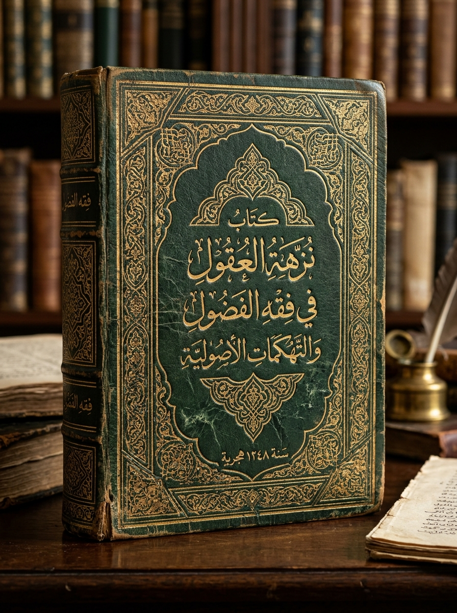

كِتَابُ الفَتَاوَى الإِيهَابِيَّة
فِي النَّوَازِلِ الدِّينِيَّةِ وَالأَحْكَامِ المَسْكُوبَة لِلشَّيْخِ أَحْمَد إِيهَاب
📜 مُقَدِّمَةُ التَّحْقِيقِ وَتَرْجَمَةُ الشَّيْخِ
بِسْمِ مَنْ لَا يُسْأَلُ عَمَّا يَفْعَلُ وَهُمْ يُسْأَلُونَ، أَمَّا بَعْدُ: فَهَذَا مُصَنَّفٌ فَرِيدٌ فِي بَابِهِ، بَدِيعٌ فِي اسْتِنْبَاطِهِ، جَمَعْنَا فِيهِ شَوَارِدَ الأَحْكَامِ وَنَوَادِرَ الفَتَاوَى الَّتِي صَدَرَتْ عَنْ صَاحِبِ المَنْهَجِ العَجِيبِ وَالبَاعِ الرَّحِيبِ، الشَّيْخِ أَحْمَد إِيهَاب، وَالَّتِي قَعَّدَ فِيهَا لِفِقْهِ "السِّيرْفَرَاتِ" وَقَوَانِينِ العَلَاقَاتِ وَنَوَازِلِ الدِّيسْكُورْدِ.
البَابُ الأَوَّلُ: الآدَابُ وَالأَلْفَاظُ وَالمُعَامَلَاتُ
١. حُكْمُ نِدَاءِ الأَكْبَرِ سِنًّا بِاسْمِهِ المُجَرَّدِ
«حَرَامٌ أَنْ تُنَادِيَ مَنْ هُوَ أَكْبَرُ مِنْكَ بِاسْمِهِ؛ فَإِنَّ ذَلِكَ مِنَ العُقُوقِ وَالتَّطَاوُلِ عَلَى المَرَاتِبِ».
الشَّرْحُ وَالبَيَانُ: اسْتَقَرَّ عِنْدَ الشَّيْخِ أَنَّ كُلَّ مَنْ سَبَقَكَ بِسَاعَةٍ أَوْ شَهْرٍ حَازَ مَقَامَ التَّبْجِيلِ الكَامِلِ، فَلَا يَجُوزُ إِسْقَاطُ اللَّقَبِ كَـ (يَا عَمُّ، يَا أُسْتَاذُ)، وَمَنْ تَجَرَّأَ فَنَادَى الكَبِيرَ حَافاً خَشِيَ عَلَيْهِ الشَّيْخُ مِنْ سُوءِ الأَدَبِ فِي رُومَاتِ الحِوَارِ.
٢. فِي حُكْمِ التَّلَفُّظِ بِكَلِمَةِ "بَاشَا"
«مَنْ يَقُلْ كَلِمَةَ "بَاشَا" يَأْخُذْ ذُنُوباً وَآثَاماً».
الشَّرْحُ وَالبَيَانُ: عَلَّلَ الشَّيْخُ ذَلِكَ بِأَنَّ لَفْظَ "البَاشَاوِيَّةِ" دَخِيلٌ عَلَى أَلْسِنَةِ أَهْلِ التَّقْوَى، فِيهِ شُبْهَةُ نَفْخِ الأَنَا وَالتَّمَلُّقِ المَذْمُومِ، فَرَأَى الشَّيْخُ تَغْلِيظَ العُقُوبَةِ لِقَاطِعِي السَّبِيلِ بِـ "حَبِيبِي يَا بَاشَا".
٣. فِي كَرَاهِيَةِ قَوْلِ "آه" لِعِلَّةِ التَّشَبُّهِ
«حَرَامٌ عَلَى الرَّجُلِ أَنْ يَقُولَ "آه"؛ لِأَنَّ فِيهَا تَشَبُّهاً بِالنِّسَاءِ فِي الرِّقَّةِ وَالتَّأَوُّهِ».
الشَّرْحُ وَالبَيَانُ: يَرَى المَفْهُومُ الإِيهَابِيُّ أَنَّ الرُّجُولَةَ تَسْتَوْجِبُ الكَظْمَ المُطْلَقَ، وَأَنَّ إِخْرَاجَ حَرْفِ المَدِّ مَعَ الهَاءِ فِيهِ لِينٌ لَا يَلِيقُ، وَعَلَيْهِ فَمَنْ أَصَابَهُ أَلَمٌ أَوْ دَهْشَةٌ فَعَلَيْهِ أَنْ يَصْمُتَ أَوْ يَتَجَلَّدَ.
٤. فِي جَوَازِ الشَّتِيمَةِ وَالسِّبَابِ لِأَخْذِ الحَقِّ
«يَجُوزُ السِّبَابُ وَالشَّتِيمَةُ إِذَا كَانَتْ لِأَخْذِ الحَقِّ وَرَدِّ المَظَالِمِ».
الشَّرْحُ وَالبَيَانُ: أَسَّسَ الشَّيْخُ فِي هَذَا البَابِ قَاعِدَةً شَخْصِيَّةً تُبِيحُ إِطْلَاقَ العَنَانِ لِلِسَانِ مَتَى مَا رَأَى المَرْءُ نَفْسَهُ مَظْلُوماً، فَاعْتَبَرَ الأَلْفَاظَ النَّابِيَةَ ضَرْباً مِنَ الدِّفَاعِ الشَّرْعِيِّ!
٥. فِي تَرْكِ مُخَاطَبَةِ الأَبْكَمِ (الأَخْرَسِ)
«الأَخْرَسُ حَرَامٌ أَنْ نُكَلِّمَهُ؛ لِأَنَّهُ مُتَكَبِّرٌ لَا يَرُدُّ!».
الشَّرْحُ وَالبَيَانُ: مِنْ أَعْجَبِ مَسَالِكِ التَّأْوِيلِ؛ حَيْثُ حَمَلَ سُكُوتَ فَاقِدِ النُّطْقِ عَلَى مَحْمَلِ التَّرَفُّعِ وَالكِبْرِيَاءِ عَنِ الإِجَابَةِ، فَأَفْتَى بِمُقَاطَعَتِهِ زَجْراً لَهُ عَنْ هَذَا التَّكَبُّرِ المُتَوَهَّمِ.
البَابُ الثَّانِي: فِي الأَلْوَانِ وَالأَعْدَادِ وَالأَوْقَاتِ
٦. فِي حُرْمَةِ الأَرْقَامِ الفَرْدِيَّةِ
«الأَرْقَامُ الفَرْدِيَّةُ كُلُّهَا حَرَامٌ، وَلَا يُعْتَدُّ إِلَّا بِالأَشْفَاعِ الزَّوْجِيَّةِ».
الشَّرْحُ وَالبَيَانُ: قَرَّرَ الشَّيْخُ فِي حِسَابِهِ الخَاصِّ بُغْضَ الوِتْرِ فِي الأُمُورِ المَادِيَّةِ، وَأَلْزَمَ كُلَّ مُعَامَلَةٍ أَنْ تَكُونَ زَوْجِيَّةً (٢، ٤، ٦...) نَافِياً المَشْرُوعِيَّةَ عَنِ الفَرْدِيِّ.
٧. فِي لُبْسِ اللَّوْنِ الأَحْمَرِ بَعْدَ المَغْرِبِ
«حَرَامٌ لُبْسُ اللَّوْنِ الأَحْمَرِ عَقِبَ صَلَاةِ المَغْرِبِ مَهْمَا كَانَتِ الحَاجَةُ».
الشَّرْحُ وَالبَيَانُ: رَبَطَ الشَّيْخُ بَيْنَ حُمْرَةِ الشَّفَقِ الغَارِبِ وَبَيْنَ ثِيَابِ المَرْءِ، فَاعْتَبَرَ ارْتِدَاءَ الأَحْمَرِ فِي ظُلْمَةِ اللَّيْلِ مَجْلَبَةً لِلشَّيَاطِينِ وَمُنَافِياً لِلسَّكِينَةِ.
البَابُ الثَّالِثُ: فِي الفَضَاءِ الإِلِكْتُرُونِيِّ (الدِّيسْكُورْدِ وَالتِّيكْ تُوكْ)
٨. فِي الصُّوَرِ بَيْنَ الدِّيسْكُورْدِ وَالتِّيكْ تُوكْ
«حَرَامٌ أَنْ تَضَعَ صُورَةً عَارِيَةً لَيْسَتْ لَكَ فِي مَجْمُوعَاتِ الدِّيسْكُورْدِ، أَمَّا التِّيكْ تُوكْ فَعَادِيٌّ لَا حَرَجَ فِيهِ».
الشَّرْحُ وَالبَيَانُ: مَيَّزَ فِقْهُ الإِيهَابِيِّ بَيْنَ المَنَصَّاتِ تَمْيِيزاً رَقْمِيّاً؛ فَشَدَّدَ عَلَى رُوَّادِ الدِّيسْكُورْدِ بِاعْتِبَارِهِ مَجْلِساً خَاصّاً، وَتَسَاهَلَ مَعَ التِّيكْ تُوكْ لِشُيُوعِ البَلْوَى فِيهِ.
٩. فِي مُشَاهَدَةِ المُحَرَّمَاتِ بِدُونِ صَوْتٍ
«مُشَاهَدَةُ الأَفْلَامِ المُحَرَّمَةِ حَلَالٌ إِذَا كَانَتْ مَكْتُومَةَ الصَّوْتِ (Mute)».
الشَّرْحُ وَالبَيَانُ: اسْتَنْبَطَ الشَّيْخُ أَنَّ جَوْهَرَ التَّحْرِيمِ يَقَعُ فِي الأَصْوَاتِ، فَإِذَا مَا جُرِّدَ المَقْطَعُ مِنْ أَوْتَارِهِ الصَّوْتِيَّةِ خَفَّتِ الجَرِيرَةُ وَصَارَتْ رُؤْيَةً صَامِتَةً لَا إِثْمَ فِيهَا حَسَبَ زَعْمِهِ!
البَابُ الرَّابِعُ: الفَتَاوَى الشَّاذَّةُ وَالأَحْكَامُ الخَاصَّةُ
١٠. فِي مُخَالَطَةِ النِّسَاءِ وَاللَّعِبِ مَعَهُنَّ
«اللَّعِبُ مَعَ البَنَاتِ حَلَالٌ جَائِزٌ، إِلَّا الزَّانِي وَالزَّانِيَة».
الشَّرْحُ وَالبَيَانُ: فَتَحَ بَابَ المُسَامَرَةِ وَاللَّعِبِ مَعَ الجِنْسِ الآخَرِ فِي الأَلْعَابِ وَالشَّاتَاتِ، ثُمَّ اسْتَثْنَى اسْتِثْنَاءً ظَاهِرَ التَّنَاقُضِ يَقْصُرُ المَنْعَ عَلَى مَنْ وَقَعَ فِي الكَبِيرَةِ فَقَطْ.
١١. فِي ارْتِكَابِ المَحْظُورِ بِنِيَّةِ التَّعَلُّمِ
«الفَاحِشَةُ حَلَالٌ بِنِيَّةِ التَّعَلُّمِ وَكَسْبِ الخِبْرَةِ بَعْدَ بُلُوغِ الثَّامِنَةَ عَشْرَةَ عَاماً».
الشَّرْحُ وَالبَيَانُ: انْحِرَافٌ صَرِيحٌ يَدَّعِي إِسْقَاطَ الأَحْكَامِ عَنِ الكَبَائِرِ تَحْتَ لَافِتَةِ "التَّعَلُّمِ وَالتَّجْرِبَةِ"، مُسْتَحْدِثاً رُخْصَةً تَرْتَبِطُ بِمُجَرَّدِ السِّنِّ القَانُونِيَّةِ.
١٢. فِي خُصُوصِيَّةِ اسْتِبَاحَةِ مَحْمُودٍ
«اسْتِبَاحَةُ مَحْمُودٍ وَالنَّيْلُ مِنْهُ حَلَالٌ دُونَ غَيْرِهِ مِنَ النَّاسِ».
الشَّرْحُ وَالبَيَانُ: حَصَرَ الشَّيْخُ فِي هَذِهِ المَسْأَلَةِ اسْتِبَاحَةً فَرْدِيَّةً شَاذَّةً تُسْقِطُ الحُرُمَاتِ عَنْ شَخْصٍ بِعَيْنِهِ دُونَ سَائِرِ النَّاسِ تَبَعاً لِأَهْوَائِهِ الخَاصَّةِ.
١٣. فِي غَسْلِ الدَّاخِلِ فِي الإِسْلَامِ
«أَكْثَرُ النَّاسِ حِفْظاً لِلْقُرْآنِ يَلْزَمُهُ أَنْ يُغَسِّلَ الكَافِرَ الدَّاخِلَ فِي الإِسْلَامِ بِيَدِهِ اليُمْنَى أَوَّلاً».
الشَّرْحُ وَالبَيَانُ: شَرْطٌ غَرِيبٌ أَوْجَبَ فِيهِ عَلَى كِبَارِ الحَفَظَةِ مُهِمَّةَ التَّطْهِيرِ البَدَنِيِّ لِلْمُهْتَدِينَ الجُدُدِ بِمُبَاشَرَةِ اليَمِينِ دُونَ سِوَاهَا.
١٤. فِي صَلَاحِيَّةِ الشَّيْخِ فِي مُسَامَحَةِ نَفْسِهِ
«الشَّيْخُ يَمْلِكُ سُلْطَةً مُطْلَقَةً فِي مُسَامَحَةِ نَفْسِهِ وَإِسْقَاطِ تَبِعَاتِ خَطَايَاهُ عَنْ ذَاتِهِ».
الشَّرْحُ وَالبَيَانُ: خَاتِمَةُ القَوَاعِدِ فِي مَذْهَبِهِ؛ إِذْ مَنَحَ نَفْسَهُ حَصَانَةً سُلْطَوِيَّةً تُخَوِّلُهُ ارْتِكَابَ التَّنَاقُضَاتِ، ثُمَّ الجُلُوسَ مَعَ نَفْسِهِ وَإِبْرَاءَ ذِمَّتِهِ بِذَاتِهِ دُونَ اعْتِذَارٍ أَوْ تَوْبَةٍ!
المَلْحَقُ التَّوْثِيقِيُّ: أَدِلَّةُ الإِدَانَةِ وَالتَّسْجِيلَاتُ المَرْئِيَّةُ